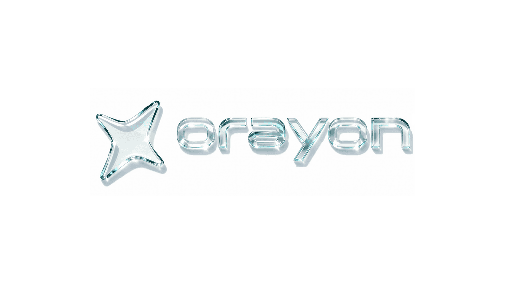
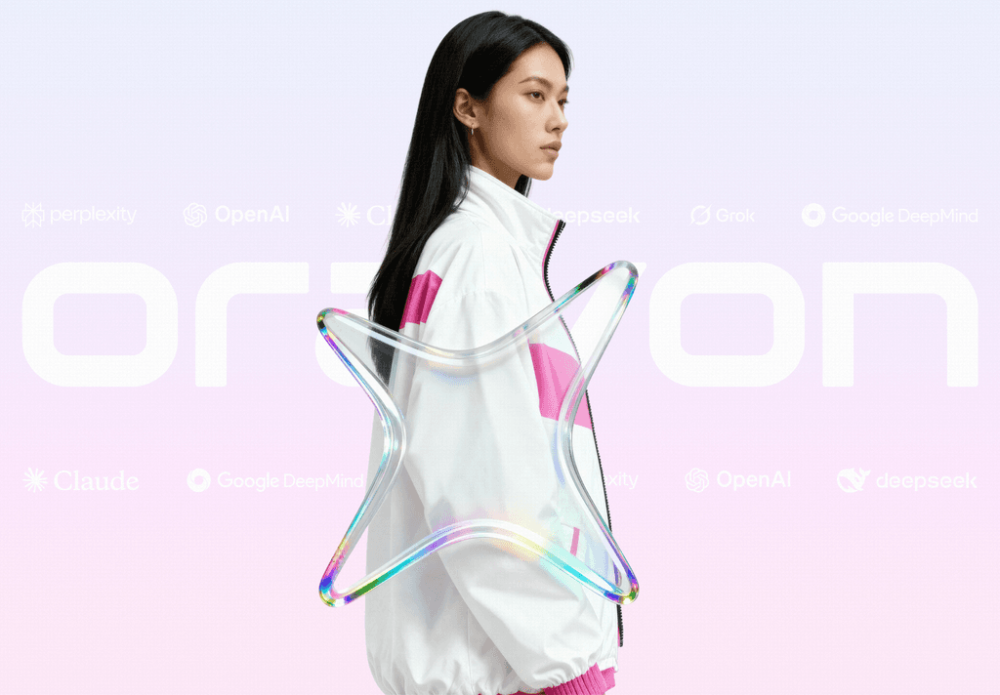
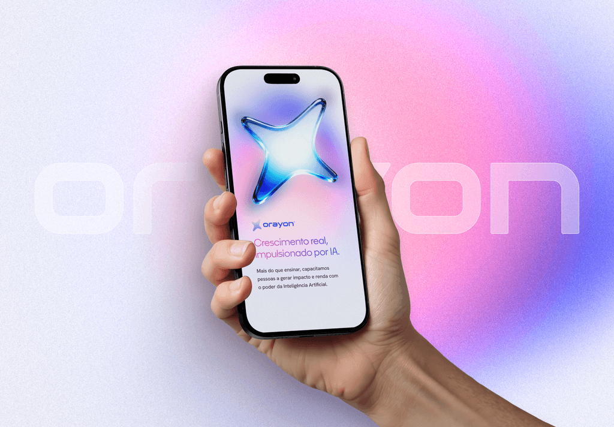
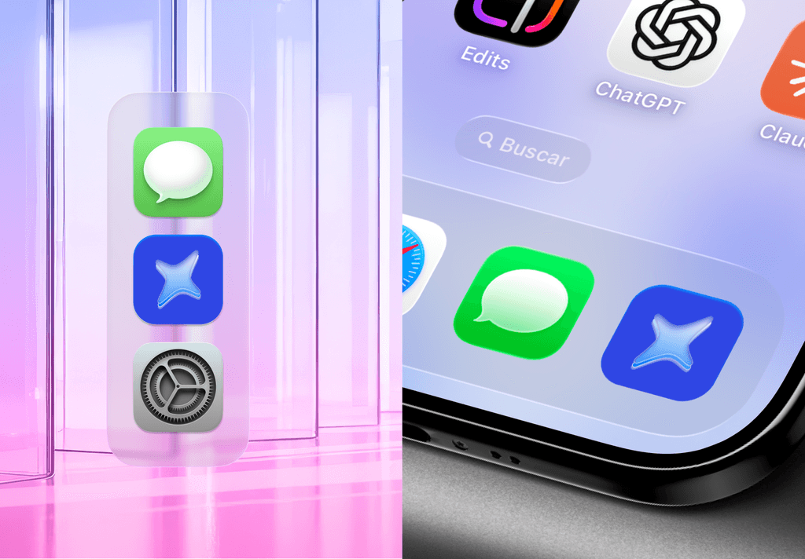
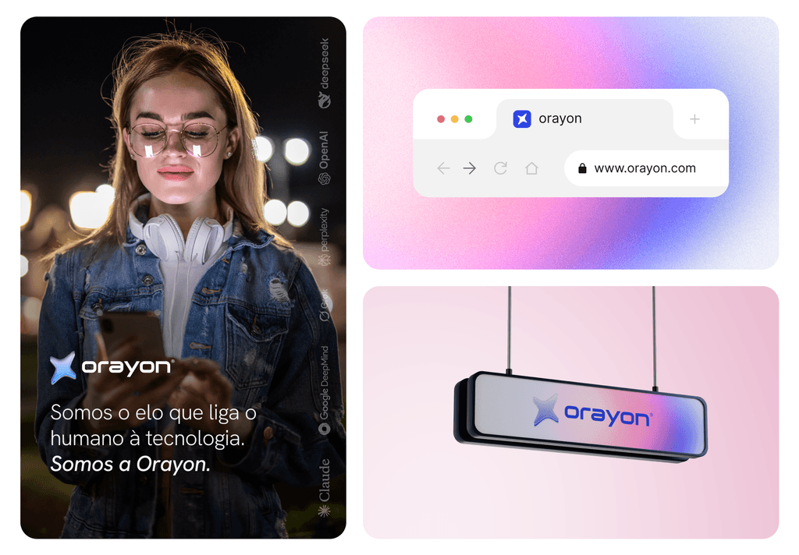
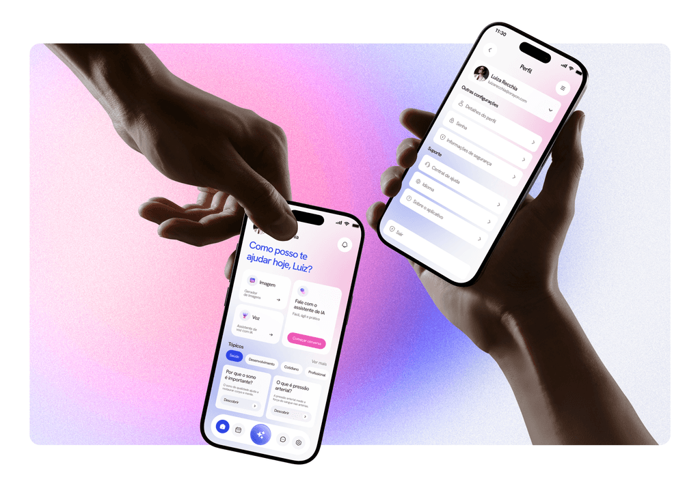

{ Visual Identity } · 11/2025
The link between humans and artificial intelligence. AI made for people.

Orayon was born in a moment where technology advances faster than people can follow. Amid the fear and expectation surrounding AI, the project carries a clear mission: make artificial intelligence accessible, human and practical.
More than a platform, Orayon is an ecosystem connecting education, technology and opportunity, helping people turn knowledge into real results.
Build a brand and a digital experience able to translate high technological complexity into something simple, close and trustworthy. It was essential to break the perception that AI is distant, technical or inaccessible, creating a visual and functional language that welcomes, guides and empowers the user.
Everything was guided by one positioning: AI doesn't replace people, it amplifies the best in them.
Visually, the project leans on soft gradients, vibrant color and organic three-dimensional elements that express fluidity, transformation and energy. The brand symbol represents connection, movement and continuous progress: the link between humans and technology.
In the product, the interface was designed to be intuitive, accessible and progressive, guiding users from first contact to advanced features like intelligent chat, voice, image generation and premium plans.





One free call. A complete diagnosis. A clear plan to move forward.
Book a 15min demo-call